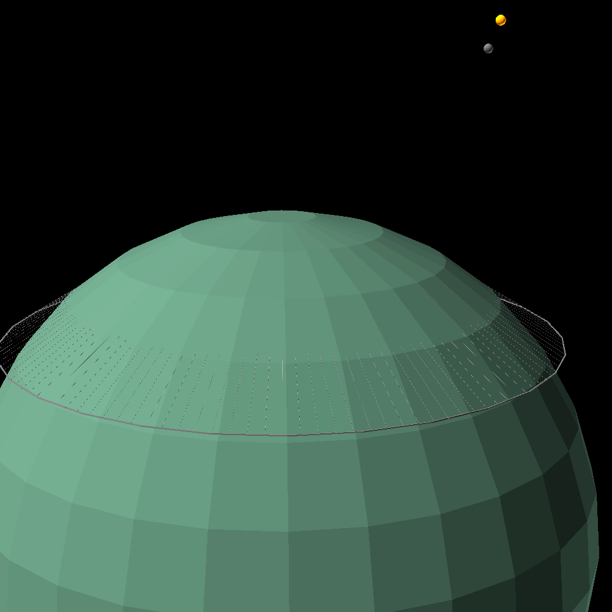

link to this page
Earth / Terra
 Earth is the emblematic example of a human-habitable planet.
In contexts where clarity is needed it is referred to by its less ambiguous name Terra.
Earth is the emblematic example of a human-habitable planet.
In contexts where clarity is needed it is referred to by its less ambiguous name Terra.
In the modern day the vast majority of people who would consider themselves Earth's population actually live in the orbital habitat cloud around the planet, as the planet itself is just too thermally and spatially constrained to house all the people wishing to live there.
Earth had grown to be a doxiadis-style ecumenopolis, with its land surface split 50%/50% between nature and urban areas, resulting in an average surface population of just 1498 people per square kilometer, though that paints a slightly misleading picture, as given the presence of posthuman entities you might sometimes struggle to distinguish between said person and said square kilometer.
In the context of the solar system, it is often seen as a luxury destination, a shrine to humanity's beginnings, or the home of those powerful enough to earn their place on it.
| Planetary information |
| surface population |
≈223 billion |
| total population |
todo |
Terran infrastructure: the example doxiadis-style ecumenopolis
Terran urbanization largely follows the doxiadis model, first described by the 20th century architect and urban planner Constantinos Apostolou Doxiadis, which got expanded and refined over the centuries by numerous successors as well as the various unforseen reality checks that every project faces in the implementation stage, but still remained known as the doxiadis model.
At the very core of the model is the walking radius, building everything else on top of this fundamental unit ensures that no matter how large a city will grow, it grows with a person in mind.
The walking radius is not a planetwide constant, it varies from area to area in accordance with the population that originally inhabited it, but frequently falls between 1km and 5km.
This variance produces a lot of diversity while still fulfilling the needs of the residents, but there are ofcourse many non-doxiadis areas which urbanized in a completely different way for diverse reasons, not the least being that not all residents of earth are organic humans that are the primary target of the doxiadis model.
Individual cells are made to contain a community, housing, a natural area and a transport network access point, all within one walking radius.
These cells are built along enormous linear transit lanes, and link up with smaller transit lanes over time as they grow, effectively producing a planetwide small-world network which enables anyone to get anywhere with just a few hops between the local and global transit lines.
By the modern day earth's transit networks had been optimized to the point that most people traveling between any 2 locations need only walk a short distance to their nearest transit access point, travel across one local line, transfer to a global line, then back to a local line, and walk a short distance to the final destination.

The transit between surface and space is handled using tethered rings, somewhat counterintuitive constructs which cleverly utilize the curvature of the earth to hang high up above the ground by hanging from the ground.
I'll limit my explanation here to saying that the ring is kept rigid with active support, and physically pulled along the surface to a higher latitude where the diameter of the ring is larger than the diameter of earth directly below it. For a more elaborate explanation see Isaac Arthur's video on the topic here and/or the Atlantis Project website.
Electrically powered surface to orbit transport nearly negates its own cost, as cargo coming down to the surface actually generates power instead of consuming it, power which can be used directly to raise cargo moving in the other direction.
relevant pages
 artificial_intelligence
artificial_intelligence